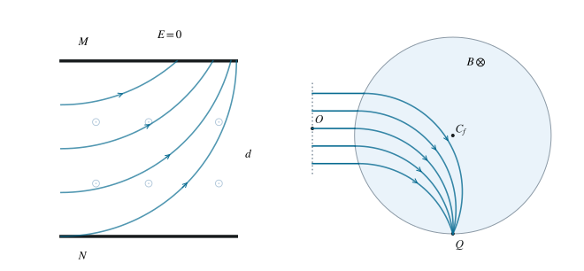

复合场除尘与平入点出
从速度选择到圆形磁场聚焦。
1 题目
1.1 物理情境
上板 M、下板 N 的长度与间距均为 ，尘粒水平进入板间。匀强电场与磁场可分别开启。板右端的中心为 ，出口束的高度范围为 。
1.2 物理过程
先同时使用电场和磁场，使尘粒沿直线通过；再分别撤去一种场，考察收集情况。最后在出口右侧设置圆形磁场区域，将所有水平出射尘粒汇聚到指定点 。
1.3 已知参数和理想化假设
尘粒质量 ，电荷 ，，水平速度 ，入口高度均匀。板间磁场垂直纸面向外。只留磁场时，要求所有尘粒能被上板吸收。圆形磁场全部位于 ，其边界通过 。忽略重力、碰撞及边缘场。
1.4 求解目标
- 判断 M 板电性，并求直线通过时电场与磁场的关系。
- 求只用磁场实现全部收集的最小磁感应强度。
- 在该临界磁场对应的平衡电场下，只用电场时求收集比例。
- 求出口圆形磁场的方向、几何位置及磁感应强度范围。

图 1. 板间的选择与偏转，以及出口右侧圆形磁场的汇聚轨迹。
2 解答展开 / 收起
2.1 速度选择条件
尘粒向右运动，向外磁场对负电荷施加向上的力。要使合力为零，电场力必须向下；由于电荷为负，电场应向上，因此上板 M 带负电，下板 N 带正电。
这一条件与质量、电荷量大小无关，但只适用于给定速度 。
2.2 全收集的充要条件与最小磁场
只有向外磁场时，负尘粒向上弯曲。以各自入射点为局部原点，轨道可写成 、，其中 ，运动开始后 增大。
入口到右侧出口的水平距离为 ，到上板的高度差 遍历 。
先证必要性。若 ，最大上升量 ，靠近下板的粒子无论怎样转动都达不到上板。若 ，最下方粒子首次到达右出口时，上升量为 ，也未被收集。因此全收集必须满足 。
再证充分性。在此区间内，对任意 ，方程 在 有解。在到达该角度以前，粒子始终满足 ，既没有从入口折返出去，也没有先从右侧离开；它能先接触上板。端点相切按吸收计入。因此完整条件为
所求最小磁感应强度为 。磁场超过 后，轨道过小，最低的一部分粒子反而无法到达上板；所以不能把“”单独作为全收集条件。
2.3 仅保留平衡电场
取临界磁场 所对应的电场 。尘粒向下匀加速，横穿时间为 ，下落距离为
入口高度均匀，只有下半部分的尘粒在离开装置前到达下板，故收集比例为 。
2.4 圆形磁场的汇聚构造
出口尘粒需向下弯曲，负电荷对应向里的磁场。设运动半径为 ，任一水平射线首次入场点为 。速度向右而弯曲向下，轨道圆心就是 。
要求轨道经过 ，等价于 。因此所有入口点同时落在这个固定圆与待求场圆上。连续束给出无限多个不同入口点，而两个不同圆至多有两个交点，所以场圆必须是该固定圆。
其圆心为 、半径为 ，最低点为 。
高度为 的射线从左向右进入圆盘，故取场圆方程的左根 ，其中 。轨道圆心为 ，从它指向 的矢量是 。第二分量与场圆方程中的 互为相反数，平方相同，因此
所以 确实在每条粒子轨迹上。场圆与轨道圆的交点为 ；入射方向指向场内，故下一个出界交点就是 。这证明了汇聚，而不只是在示意图上画出交点。
2.5 几何限制与磁场范围
整个圆盘在 内，要求最左端 ，即 。要覆盖最高出口射线 ，圆盘顶端必须满足 ，即 ；其最低点低于全部出口射线，其他高度条件自动成立。因此对连续束的全收集比例，
当 时，最高的一条射线与场圆相切，不进入场内。若“所有”包括这条理想边缘射线，应取 ，相应磁场上界为严格小于号；对均匀束的数量比例，这条零测集不改变全收集率。
3 方法与讨论
全收集条件包含两个相反限制：半径太大，偏转不足；半径太小，粒子提前折返。用最低入射轨迹找必要条件后，还须对任意入口高度证明充分性。聚焦问题则应验证每条轨道经过同一点，并进一步判断该点确是首次出口。